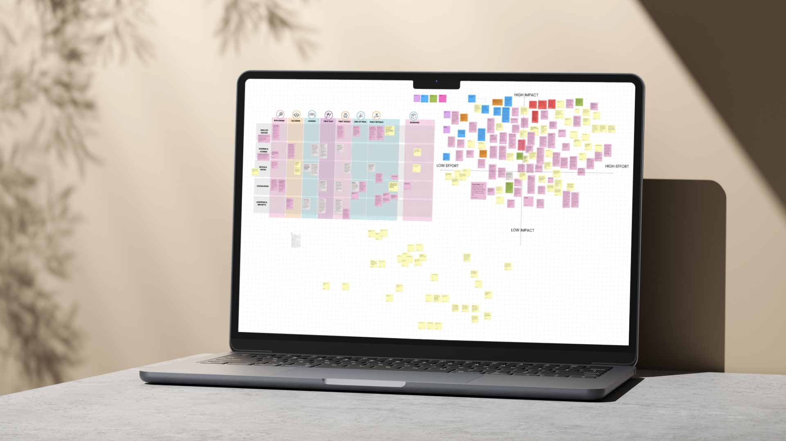
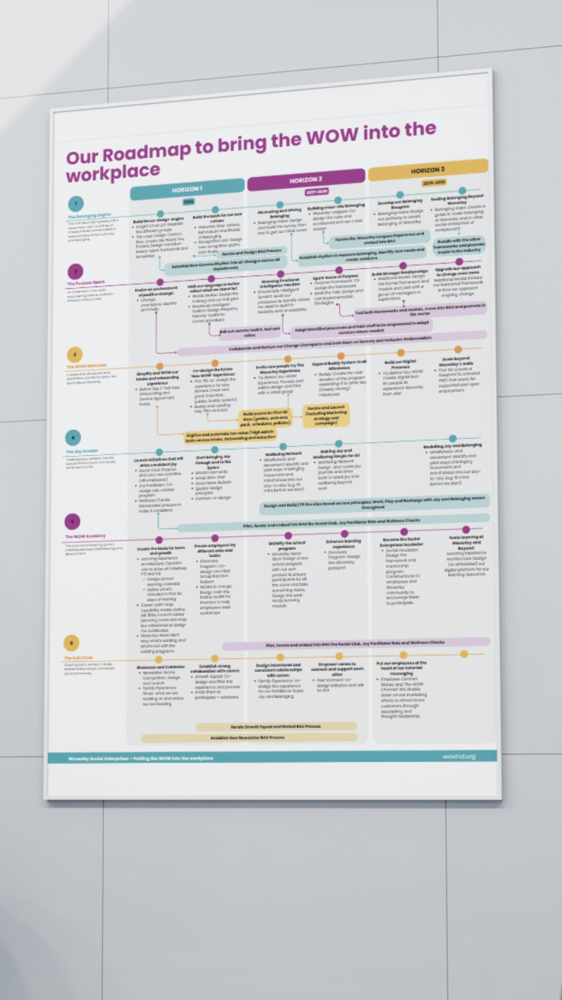
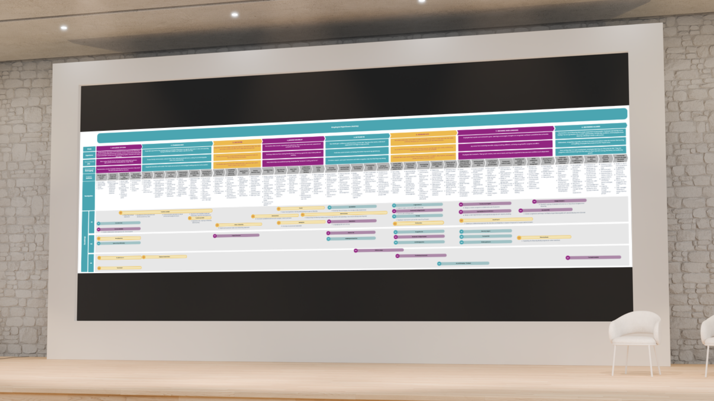
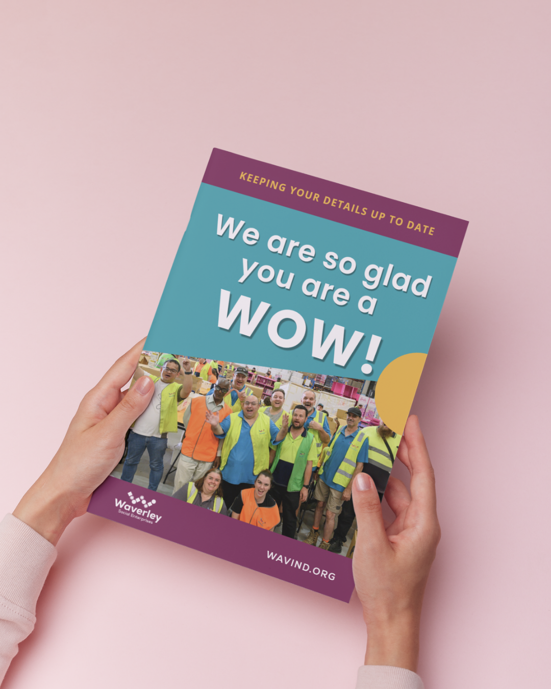

Waverley Social Enterprises had compliance covered. What they were missing was an experience deliberately designed for the people at the centre of it. Ten onboarding documents became one. Career conversations were transformed. And for the first time in the organisation’s history, every annual renewal form came back complete.
This engagement is ongoing. Outcomes documented here reflect work completed to date, with four further initiatives in development. Results will continue to grow.
Waverley Social Enterprises had done the right things. Years of investment in quality and compliance had put them in a strong position from an NDIS perspective. There was nothing wrong with what they had built.
But if Waverley was going to become the best supported employment provider in Victoria, not just a good one, they needed something that quality frameworks alone were never going to give them: an experience that actually felt designed for the people at the centre of it.
They had tried. A service designer here, a consultancy there. What they kept encountering was the same problem: people who could think creatively but could not implement, or people who could implement but only if you accepted what they had already built for someone else.
Nobody was sitting with the supported employees, the carers, the frontline staff, and designing something that genuinely belonged to Waverley. That is what they were looking for when they found SHiFT with Purpose.
Waverley Social Enterprises
wavind.org →Engagement initiated by: Sarah Exton, former CXO, now C-level Executive, Founder and Board Member. The relationship continues under new leadership.
The engagement followed the SHiFT Method across all four stages; from deep research through to implementation. Six programmes of work. Three horizons. One coherent experience designed specifically for Waverley.
The engagement started where it had to: with the people, not the systems. Workshops and interviews were conducted across the full organisation; supported employees, carers, frontline staff, and leadership. Time was spent in the workplaces themselves, understanding how people moved through their days, what motivated them, what created friction, and what they needed that they were not currently getting.
This is the research that does not show up in a compliance audit but shapes everything downstream.
From the research, a vision was designed for what the Waverley supported employee experience could be, underpinned by six programmes of work, each addressing a specific layer of the experience. The roadmap gave the board and funders the structured view they needed to commit to what Nick, Kiran, and the leadership team had already seen was necessary. Internal conviction became organisational commitment.
Work is well underway. Ten onboarding documents that were compliant but confusing and inaccessible for many people moving through them have become one integrated experience. Onboarding questions have been cut by 50%; no more asking the same thing twice, no more blank sections where someone gave up and moved on. Quotes and service agreements have been standardised, removing a significant layer of administrative work.
Several of the redesigned onboarding forms now do double duty as annual renewal documents, saving time across the organisation without sacrificing accuracy. Four more initiatives are in development, with pilots due in three months.




“We were looking for a unicorn, and we found her. We needed someone who could do it all, and I honestly didn’t think they existed. We interviewed service designers and a few larger creative agencies, but SHiFT with Purpose was the only one that took the time to understand us and didn’t propose a cookie-cutter approach. I never have to worry about anything; she’s the dream.”
Manda Soric, the NDIS Quality Manager, brought a specific challenge. Waverley had developed a career advancement policy; a structured four-category framework using a traffic light system to help supported employees articulate where they were and where they wanted to go.
Good policy. But how do you have that conversation with a supported employee in a way that feels safe, honest, and genuinely theirs?
Manda asked for a way to communicate the policy. The easy answer would have been a presentation. Something to explain it, something to show. Instead, the policy became a game. A set of cards was designed for mentors and supported employees to use together in their career conversations; not to instruct, not to present information at someone, but to make space for people to show up in the conversation without managing how they were perceived.
Employees stopped getting stressed. They led with honest thoughts rather than calculated answers designed to meet what they assumed their mentor wanted to hear. Mentors had better, truer information to work with. And the organisation could, for the first time, genuinely demonstrate choice and control; not just document it for compliance purposes.
The distance between “how do we communicate this policy?” and “what would it take for this conversation to actually work?” is enormous.
That reframe is small in words. In practice, it is the difference between compliance and genuine choice and control.
“We were looking for a unicorn, and we found her. We needed someone who could do it all, and I honestly didn’t think they existed. We interviewed service designers and a few larger creative agencies, but SHiFT with Purpose was the only one that took the time to understand us and didn’t propose a cookie-cutter approach. For us it is critical that our participants feel heard and engaged, and Catalina’s approach exceeded our expectations. I never have to worry about anything; she’s the dream.”
“Turning a policy into a game? That’s just brilliant. I haven’t been this excited to roll out something in ages.”
“Catalina helped us transform a chaotic process into a seamless experience.”
There is a particular trap in designing for people who are often excluded from design processes. The instinct, well-meaning and entirely understandable, is to communicate at them rather than design with them. Explain the policy. Present the options. Hand over the information and trust they will know what to do with it.
The career planning cards exist because someone asked a different question. Not “how do we communicate this policy?” but “what would it take for this conversation to actually work; for the person in it to feel safe enough to be honest?”
Any organisation working with people in complex or high-stakes circumstances is carrying some version of this gap. The form that makes complete sense to the compliance team but creates anxiety for the person filling it in. The process designed for efficiency that quietly signals to the person moving through it that they are not the point. The policy that is technically sound but practically unnavigable.
“Purpose is a promise. CX is how you keep it.”
Thirty minutes. No pitch. A conversation about where the leverage is hiding in your participant or employee experience.
Book a discovery call →The Experience Architecture Index is a 15-minute diagnostic that shows you exactly where loyalty is leaking in your experience, and which layer to strengthen first.
Take the EAI Quiz →